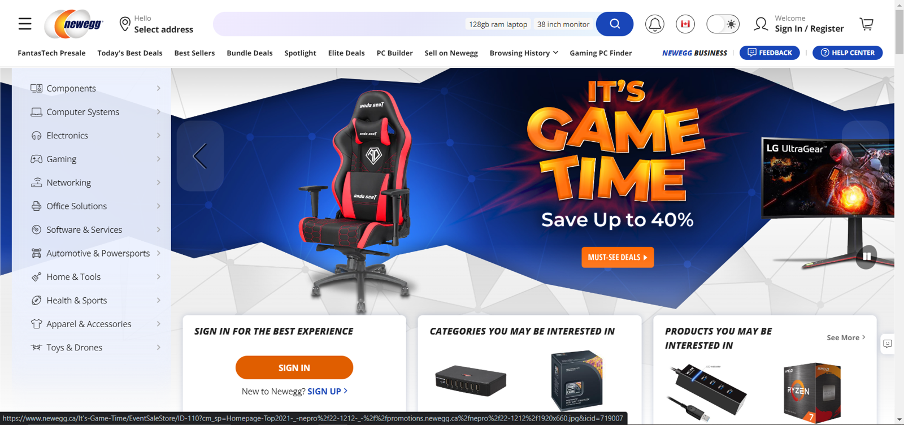
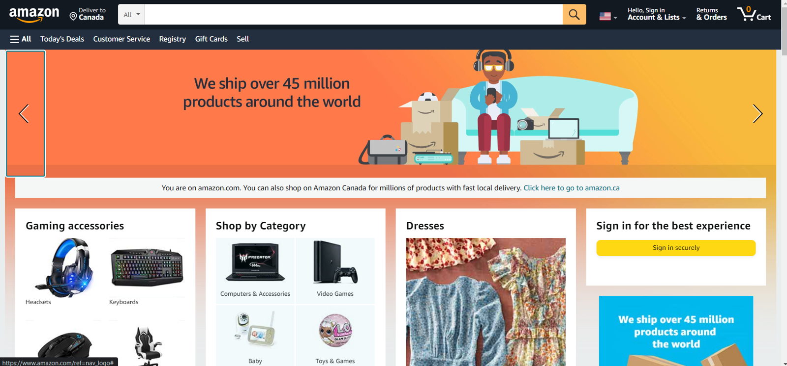
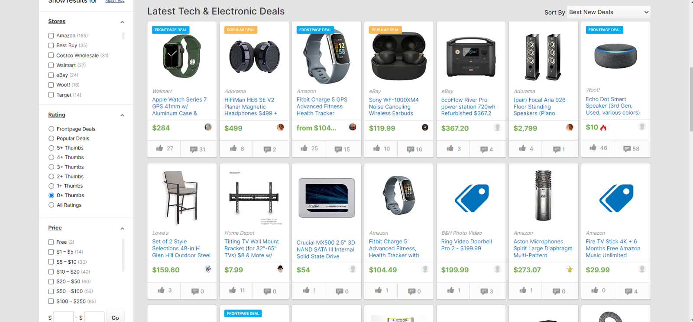
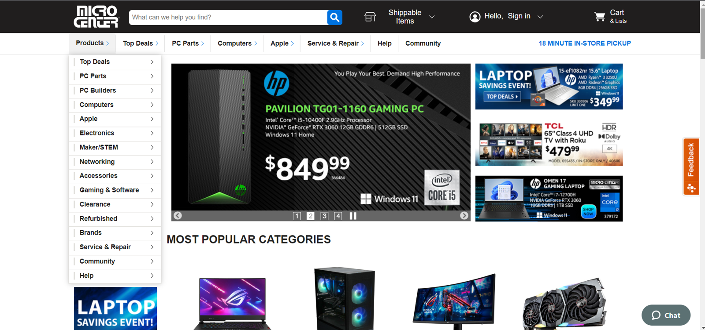
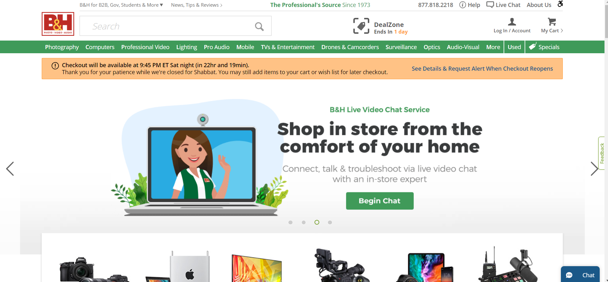
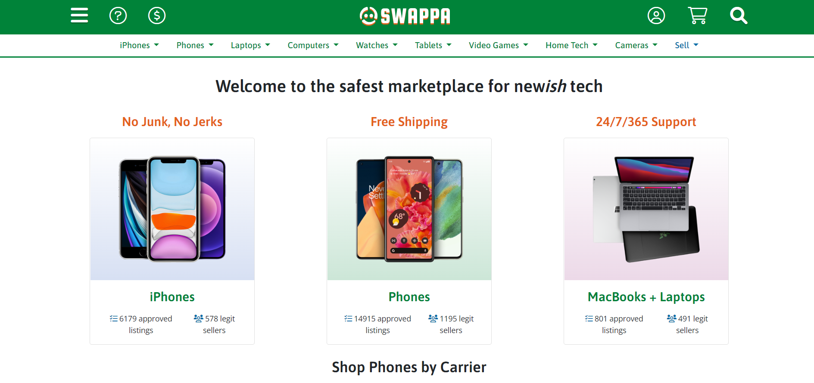
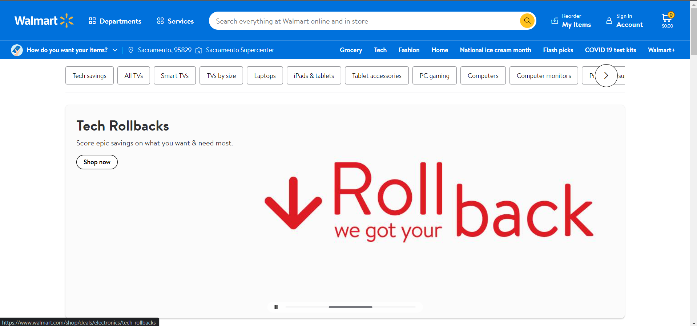
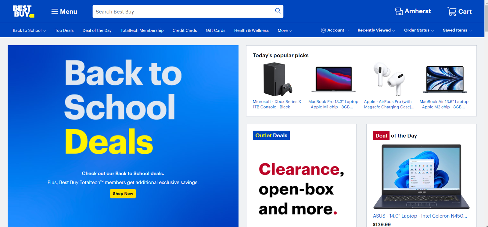

 Newegg- Newegg has been here for over two decades. It has now developed to be one of the internet's top money-saving online shopping websites. The site's initial concentration was on computer hardware, but it quickly extended into software and other devices. Household appliances, sports gear, and fashion products are also available nowadays. Notwithstanding its growth, Newegg remains one of the finest locations to get low-cost networking gear, computer components and software solutions for an office or workstation. Newegg, like Amazon, offers additional items but also enables third-party vendors to distribute their products through the marketplace. Newegg also has a good selection of reconditioned, opened, and discontinued products. They are also available at even greater savings. Website: www.newegg.ca |
 Amazon, as you might expect, sells a large range of devices, laptops, smartphones, e-readers, projectors, and much more. Although the discounts are not as deep as those available at some online electronics companies, they do provide daily specials, free delivery on Prime products for Prime subscribers, and a consumer review area that may be quite useful when making a purchasing choice. (In fact, I frequently read Reviews on amazon whenever I'm not hoping to purchase something from Amazon!) Website: amazon.com |
 Slickdeals-Because of its community-powered bargains, Slickdeals is extremely popular among IT workers.
Slickdeals, like TechBargains, allows community members to submit discount codes and bargains from all over
the internet for everybody to view and use on technology, gadgets, fashion, travel, and so much more. You may simply
register for deal notifications by category or input your personal product information and phrases for a customized search,
and you will be alerted when a new offer matching your criteria is posted. |
 Microcenter: Despite the fact that Micro Center maintains traditional retail locations across the United States, the best bargains may be obtained online. They are a full-service technology retailer, selling anything from computers and gaming consoles to wifi, servers, and audio-visual connections. Their greatest prices may be found on reconditioned, closeout, and box open-box box products - these things might change on a daily basis, so keep checking periodically for fresh offerings. Website: microcenter.com |
 B&H:While B&H maintains a physical location in New York, it is now predominantly an online store. B&H specializes in audio and video equipment. It's what the actual business sold when it first opened its doors in 1973. Now it offers to sell PCs and other home technology products. There is also a "Used" section on the website. Everything from used camera equipment to darkroom equipment is available. Website: bhphotovideo.com |
 Swappa:Did you consider using second-generation technology? If you're on a tight budget, big-ticket products such as TVs, video game systems, and high-end smartphones may be found for a lot cheaper whether you're willing to accept used equipment. Swappa does have some of the greatest second-hand bargains. The site, like Micro Center, is entirely dedicated to technology. You purchase directly with the other users, eliminating the need for a middleman. Swappa has a strict posting clearance process in place to prevent defective products from being purchased. Website: swappa.com |
 Walmart: Walmart is a global retail organization headquartered in the United States that is the world's biggest by revenue. On their online shopping website, you may enjoy acquiring very high-quality products at a very affordable price. They provide highly nice and efficient user assistance programs in addition to economical prices. They believe in providing the greatest online shopping experiences to their loyal consumers. Website: walmart.com |
 Best Buy: is an American international retailer (online and in-store) that mostly sells consumer electronics. On their website, you may get a variety of branded electrical items of your choice at the most competitive prices. Website: bestbuy.com |